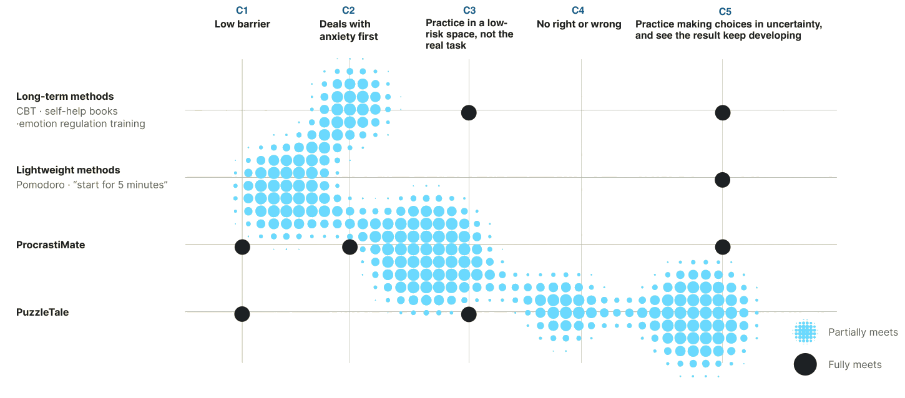
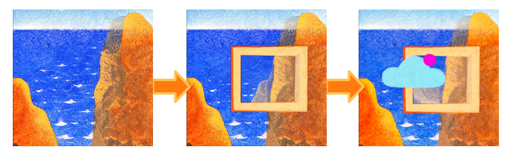
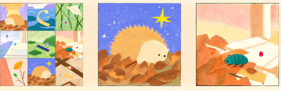
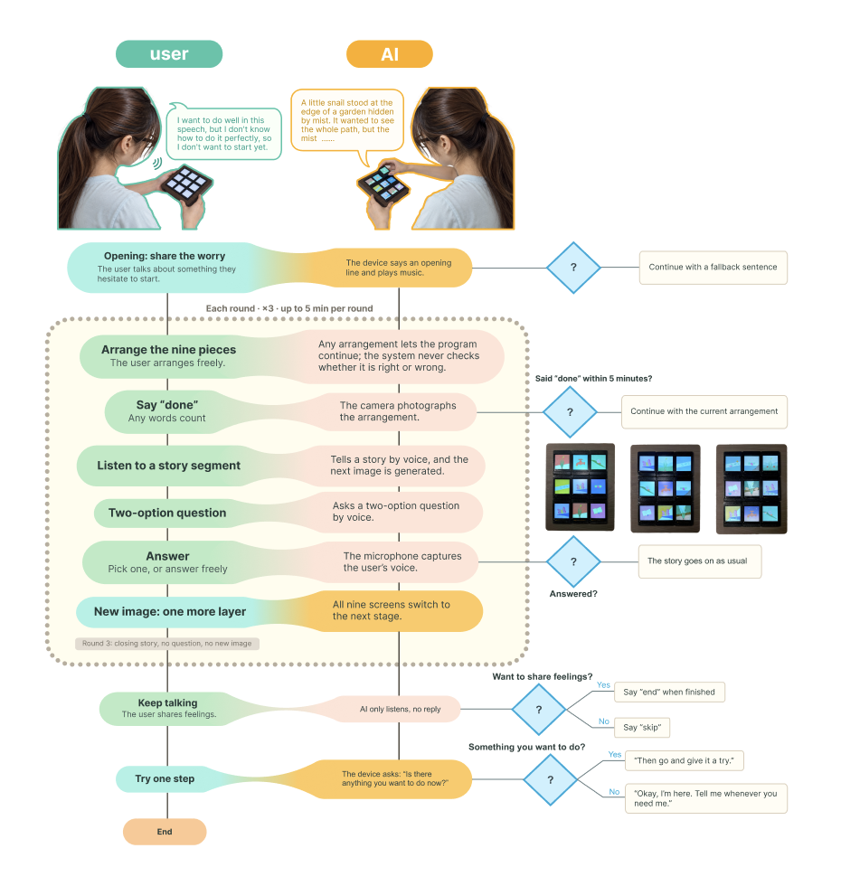
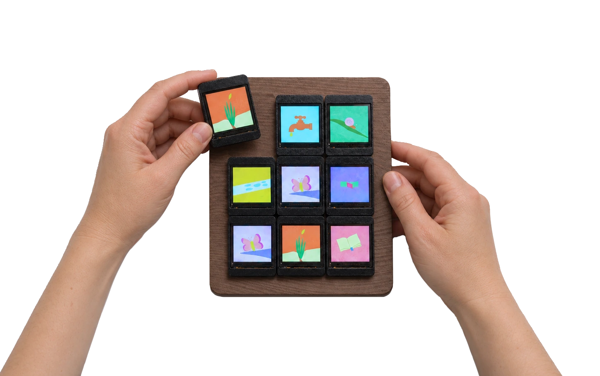

Background
Waiting for the best way can keep us from starting.
While preparing for IELTS, I kept waiting to learn enough words before starting practice. This led me to ask how people could practise acting before they knew the best option.
Research
What kept people waiting, and what led them to act?
I surveyed 21 people about a task they had delayed.


Sixteen often or almost always started late. Nineteen felt they needed to know the best way before starting.


Concerns about outcomes and readiness were selected 27 times, compared with 12 for time or interest.


No one started because they had found a definite method. After starting, 9 of the 19 found the task different from what they had expected.

Design
Practise choosing before everything is clear.


I looked for a low-risk activity with no correct answer, where a choice could lead to a result that keeps developing. This combination was missing from the approaches I reviewed.


Each arrangement adds an image layer and moves the story forward. Three rounds give the experience time to develop and a point to stop revising.


The story follows the arrangement and the user’s spoken answers. A character placed near water may need to cross it; near a tree, it may find shelter.
Building the prototype
From module design to an integrated device.


I soldered the electronics, programmed the screens, and modelled and printed the enclosures.


Each module has an ESP32-C3, a display, and a battery. I integrated the nine modules with a Raspberry Pi controller.

Completed experience
Arrange, listen, and decide what happens next.



